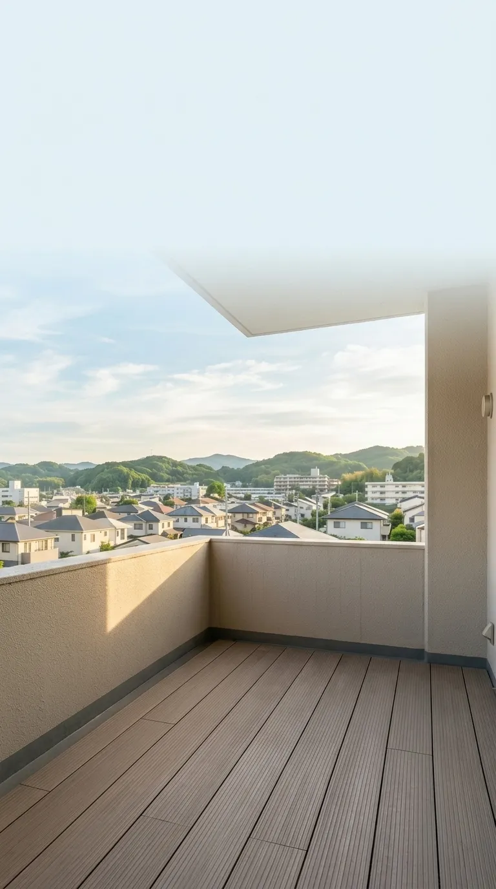
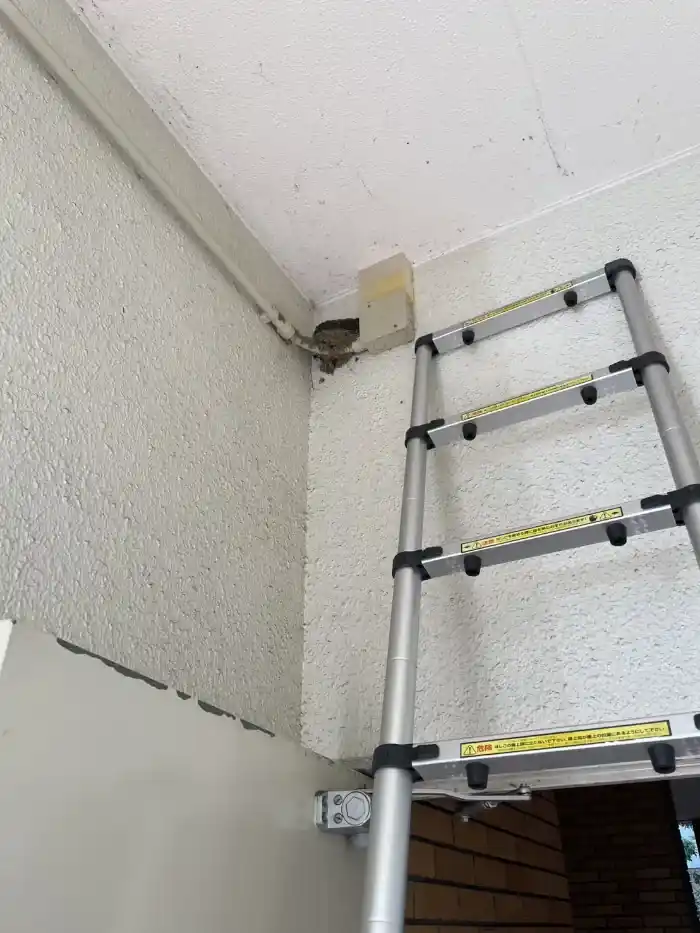
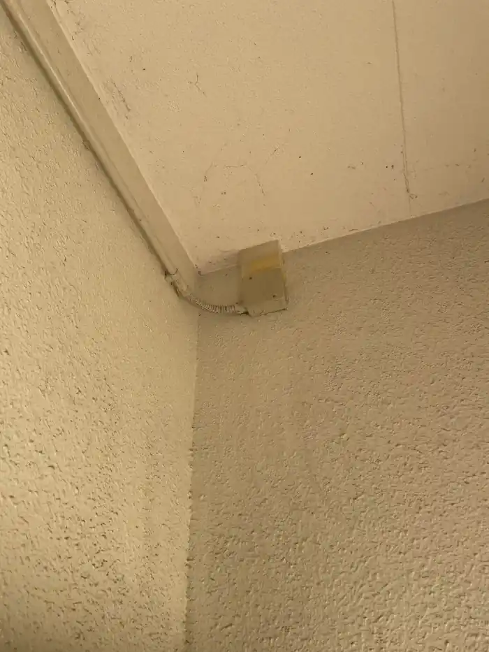
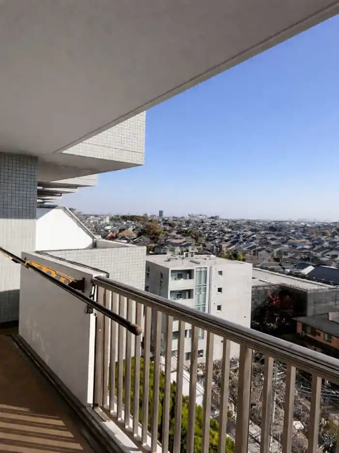
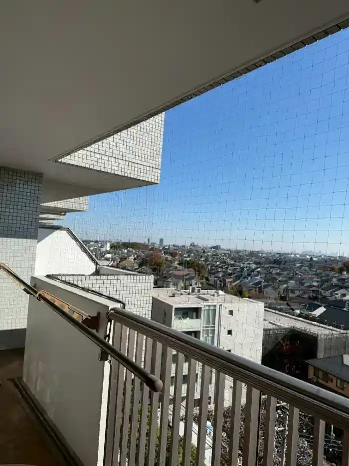
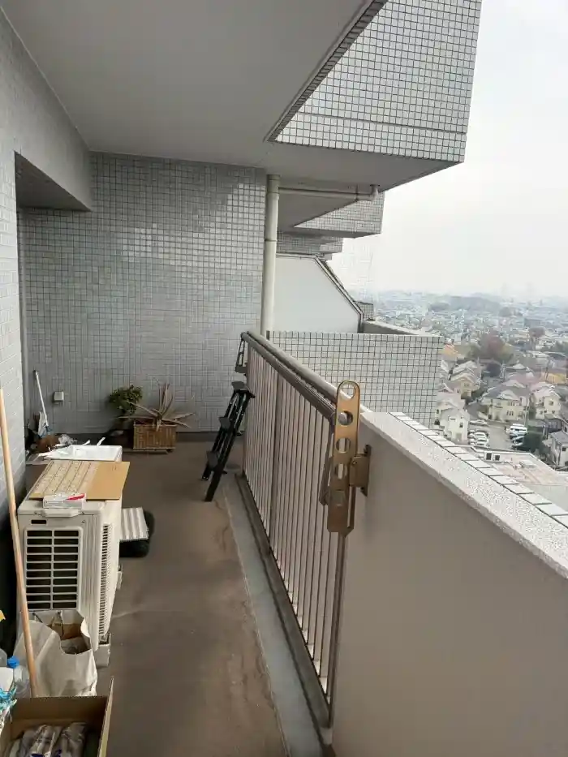
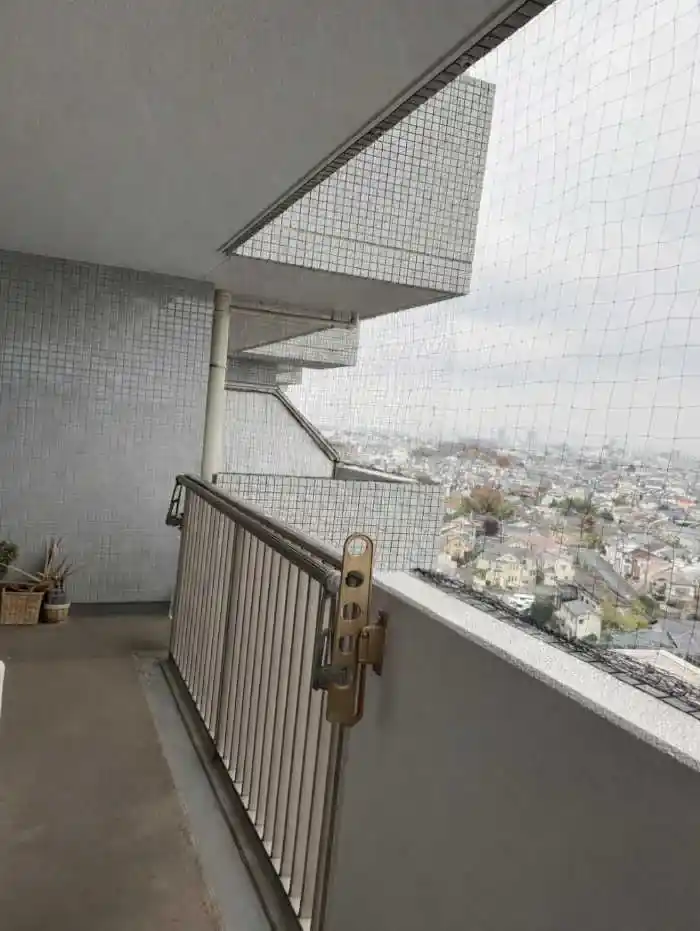

まずは現状のご相談を ハト・ムクドリ・スズメ・ツバメ・カラス・コウモリの こんな被害でお困りではありませんか？

ムクドリ

- 被害特徴
- 集団での騒音被害、ベランダへの大量の糞害、異臭
- 作業内容
- 忌避剤の設置、防鳥ワイヤーの展張、高圧洗浄清掃
スズメ

- 被害特徴
- 換気扇や軒先への巣作り、大量の藁の蓄積、ダニの発生
- 作業内容
- 巣の撤去・清掃、侵入口へのネット施工、除菌・消臭処理
ツバメ

- 被害特徴
- 巣作り、ヒナによる大量の糞害、寄生虫の発生
- 作業内容
- 巣の撤去、侵入口の閉鎖作業、清掃・消毒作業
カラス

- 被害特徴
- ゴミの散乱、威嚇・攻撃行動、屋上への巣作り
- 作業内容
- 巣の撤去（卵・雛対応）、防鳥ネット施工、物理的遮断
コウモリ

- 被害特徴
- 屋根裏の騒音、独特の異臭、壁の隙間からの侵入
- 作業内容
- 追い出し処理、侵入口の封鎖工事、除菌消臭
あらゆる場所の鳥害対策に対応 戸建てから大規模施設まで建物の構造に合わせた最適な施工をご提案します

戸建て・マンション
ベランダの糞害や屋根裏の浸入など、住まいの美観を損なわない施工を行います。

店舗・オフィス・公共施設・駅
お客様の出入りを妨げず、施設の衛生環境とブランドイメージを徹底的に守ります。

工場・倉庫・大規模施設
高所作業や広範囲のネット展張など、特殊な環境下での防除も熟練の技術で完遂します。
状況に合わせた最適な防除手法の提案 鳥の生態に基づいた「再発させない」対策プラン

植物性忌避剤
鳥が嫌がる特殊な成分を設置。視覚・嗅覚・触覚に訴えかけ、自然に寄り付かない環境を作ります。

高耐久防鳥ネット
目立ちにくい素材を使用し、建物の美観を損なわず物理的に侵入を100%遮断します。

防鳥スパイク(剣山)
手すりや梁など、鳥が止まりやすい場所に設置。着地を物理的に防ぎ、休憩場所を与えません。

防鳥ワイヤー
マンションのベランダ手すり等に最適。細いワイヤーで着地を不安定にさせ、飛来を防止します。
※被害のレベル(休憩・待機・巣作り)に合わせて、これらを組み合わせた「オーダーメイドの防除設計」を行います。
レスキュー侍が選ばれる理由 他社を圧倒する「四つの証」
（自社集客）
（仲介料込）
（外部業者）
30%〜40%
or
別途有料
※仲介業者や広告費を排除し、品質と価格でお客様に還元しています。
※保証の最大条件(期間の詳細)はスタッフまでお声掛けください。
解決の記録 施工事例
「レスキュー侍」による、実際の解決実績の一部をご紹介します。


共用出入口でツバメの巣撤去
建物の共用出入口の高所にツバメの巣ができていた。ハシゴ(梯子)を用いて高所に対応。巣の他に卵も確認されたため、これらの撤去と、清掃・消毒作業も実施。


共用廊下へハト侵入防止ネットを設置
共用廊下にハトが度々出没しては、休憩していたため防鳥ネットを設置し物理的に侵入を遮断。


共用廊下にハト対策用の防鳥ネットを設置
ハトが共用廊下の室外機等で休憩していたため、巣作りが行われる前に防鳥ネットで侵入防止。
ご依頼の流れ 解決までの「四段構え」

無料相談
LINE・電話・フォームより、現在の状況やご相談内容をお伝えください。

現地調査・見積
作業員が現場へ急行。被害状況を調べ、その場で明朗な御見積書を提示します。

各種施工
熟練の技で、鳩をはじめとする害鳥を二度と寄せ付けない施工をします。

安心保証
施工後、万が一鳥が戻れば無償で再施工。最長で半永久保証いたします。
決済方法 お支払い方法について
現金のほか、各種クレジットカード、電子マネー、QRコード決済に対応しております。
作業完了後、その場でお支払いが可能です。
※詳細はお電話など、受付時にスタッフへご確認ください。
※「VISA, Mastercard」「PayPay」等、幅広く対応しています。
レビュー 利用者様からの高評価
雨どいに鳥が巣を作ってしまい、雨が降るたびに水が溢れて困っていました。調査後すぐに巣の撤去と詰まりの解消、再発防止の処置まで対応。説明も分かりやすく、安心して任せられました。
搬入口付近に鳥が集まり、商品や床が汚れるのが悩みでした。現場を確認して侵入経路を塞ぎ、必要な箇所に対策を施工。作業もスピーディーで、衛生面の不安が解消されました。
外階段の踊り場に鳥が居座り、糞で滑りやすくなって危険でした。清掃と消毒を丁寧に行ったうえで、鳥が止まれないよう対策を設置。施工後は被害がなくなり、安心して通れるようになりました。
室外機の裏に鳩が入り込み、羽や糞が溜まって困っていました。清掃と消毒をしたうえでネット施工もしてもらい、再発防止まで万全。見た目も自然で、今では安心して過ごせています。
朝方に屋根裏から鳴き声がして、臭いも気になるようになりました。調査で巣の場所を特定し、撤去と消毒、侵入口の封鎖まで実施。施工後は音も臭いもなくなり快適です。
店舗の看板周辺に鳩が集まり、糞で汚れが目立つようになって困っていました。現地調査で原因を確認し、清掃と防鳥対策をまとめて実施。見た目を損なわない施工で、今では汚れも再発せず助かっています。
FAQ 八王子市でよくあるご質問
お問い合わせ前によくいただくご質問をまとめました。
もちろんです。八王子市内のマンションベランダ1箇所から承ります。八王子の密集した住宅環境に適した、目立たないネット設置や忌避剤施工を行います。
八王子のビルやマンションの屋根は鳩にとって絶好の営巣場所です。ソーラーパネルの隙間も同様で、放っておくと故障の原因になります。パネルを傷つけない専用の防鳥具設置と、パネル下のフン洗浄・消毒まで対応可能です。
八王子の飲食店街（旭町・南大沢・高尾町）ではカラスや鳩がゴミを狙う被害が多発します。衛生面で保健所の指導も厳しいため、ゴミ置き場専用のネットや忌避剤を設置。店舗のブランドイメージを守ります。
はい、可能です。八王子市内の駅近辺やランドマーク周辺のビルでは鳩被害が深刻です。高所作業に特化した施工で、景観を損なわない対策を行います。観光地周辺の店舗オーナー様も多数ご依頼いただいています。
可能です。八王子の大型マンションやアパート経営者様向けに、全棟一括でのネット設置や清掃を低コストで承ります。入居者様の満足度向上と空室リスク低減に貢献します。
はい、完全無料です。八王子市内は最短30分、そのほかの地域も1時間以内で駆けつけます。見積もり後のキャンセルも無料なので、お気軽にご相談ください。
5つの安心約束 お客様と交わす「5つの約束」
無料相談・見積り お急ぎの方はお電話で！
最短30分で現場へ駆けつけます。
相談・現地調査・見積りは完全無料です。
24時間365日受付中
📞 050-8896-4221- 強引な営業は一切いたしません。
- 他社との相見積もりも大歓迎です。
- 最短、本日中に解決可能です。